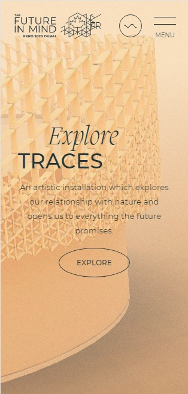
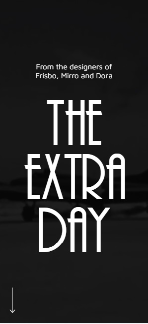

Design Principles Document
Visual hierarchy
Techamulets
The visual hierarchy on the site is the organization and design of information in such a way that the visitor can quickly understand the interface and distinguish the main from the secondary.
techamulets.comRule of thirds?
Future in mind
The Rule of Thirds web design technique is used for creating pleasing aesthetics and balance in images. It basically says that placing items of interest on the “thirds” of an image is more pleasing to the eye than centering or more other symmetrical approaches. These thirds are created by dividing an image (or working space) nto nine equal parts, with two equally spaced horizontal lines and two equally spaced vertical lines
https://pavilion.thefutureinmind.ca/Contrast in Web Design
The Extra Day
Contrast is one of the main techniques in web design, which allows designers to get the attention of users, interest them and encourage them to take targeted actions.
https://extraday.ro/